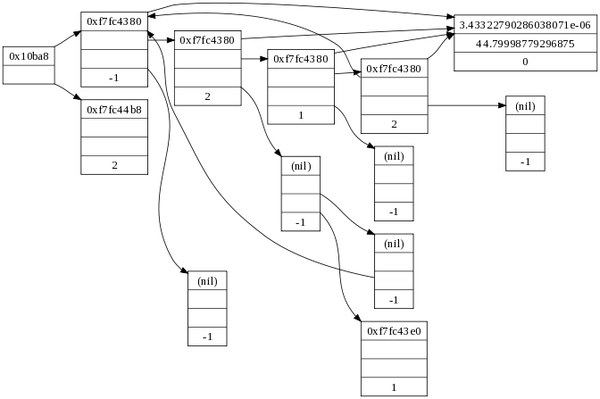
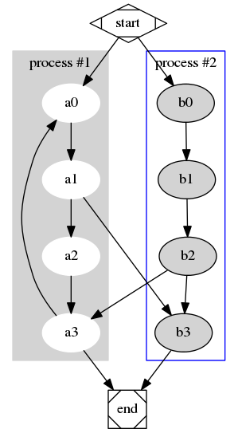

Graphviz 是一個非常強大的 關係圖 繪製軟體，可以透過 dot 語言來描述節點與 節點之間的關係，來畫出非常漂亮的關係圖。
舉例來說，你可以很輕鬆的畫出下面這樣的圖: (圖片取自 Graphviz 官網)

設定你的 emacs
org-mode 有一個 babel 功能，可以讓你對程式碼區塊 (src block) 使用 C-c C-c 來進行運 算，對於 Graphviz 程式，這樣的運算可以直接獲得結果，也因此，在 org-mode 裏面使用 Graphviz 你並不需要建立新的檔案。
預設的 org-mode 並沒有打開這項功能，因此你要在你的 .emacs 加入以下幾行 設定
(org-babel-do-load-languages 'org-babel-load-languages '((dot . t)))
在 org-mode 使用 Graphviz
在 org-mode 要直接使用 Graphviz 畫圖非常的簡單，將你的 dot 程式寫在程
式碼區塊 (src block)，並使用 :file 來告訴 org-mode 這個檔案會輸出到哪
裡，此外由於我們只需要輸出的結果，因此在 :exports 欄位則設定為 results。
下面就是我們用來繪圖的 dot 程式碼:
#+BEGIN_SRC dot :file data/2013/graphviz-example.png :exports results digraph G { subgraph cluster_0 { style=filled; color=lightgrey; node [style=filled,color=white]; a0 -> a1 -> a2 -> a3; label = "process #1"; } subgraph cluster_1 { node [style=filled]; b0 -> b1 -> b2 -> b3; label = "process #2"; color=blue } start -> a0; start -> b0; a1 -> b3; b2 -> a3; a3 -> a0; a3 -> end; b3 -> end; start [shape=Mdiamond]; end [shape=Msquare]; } #+END_SRC
如果你對上面的程式碼區塊使用了 C-c C-c ，則他會自動幫你產生下面的資 訊，並且在你設定的路徑產生輸出的圖片檔。
#+RESULTS[6a0acf86296f27722ea943b1748d99126186564c]: file:data/2013/graphviz-example.png
我們產生的圖片檔如下:
